AM ทำอะไรได้บ้าง
👤 1 · จัดการสมาชิก (Member Management) ▾
หน้า /member-management — เพิ่ม/แก้ไข/ลบ และนำเข้าผู้ใช้ระบบ พร้อมกำหนดบทบาทและโครงการที่รับผิดชอบ
1.1 ดูรายชื่อสมาชิก
- คลิกเมนู "จัดการสมาชิก" จากแถบเมนูด้านบน
- ระบบแสดงตารางรายชื่อสมาชิกทั้งหมด พร้อมบทบาทและสถานะ
- ใช้ตัวกรองด้านบนเพื่อกรองตาม บทบาท (role), แผนก หรือสถานะ ใช้งาน/ปิดใช้งาน
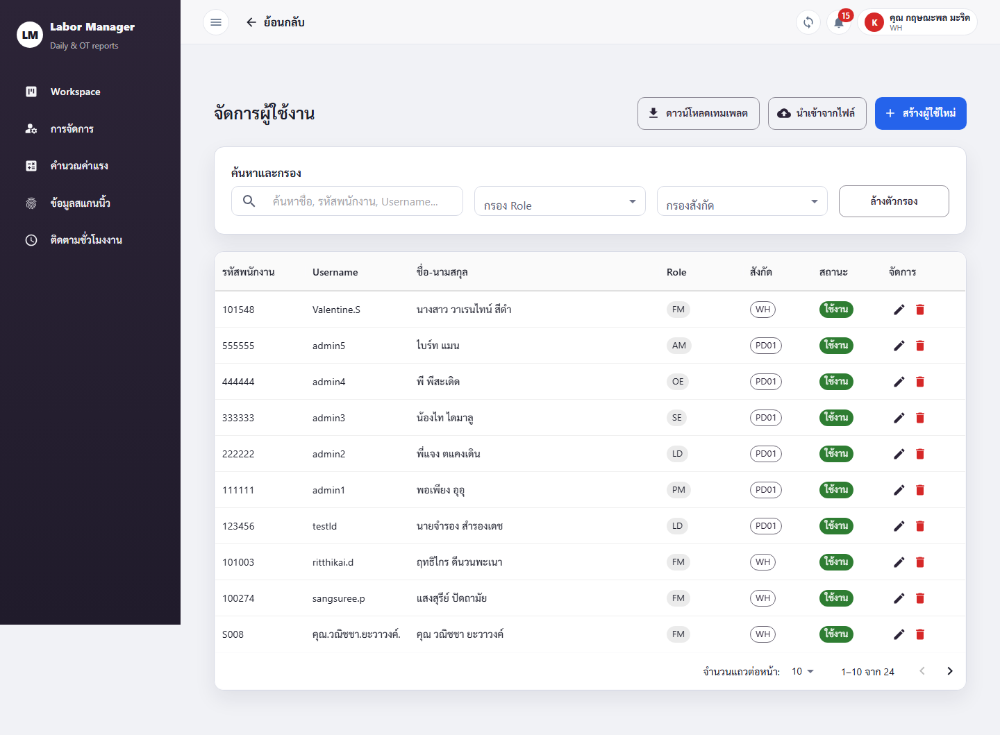
1.2 เพิ่มสมาชิกใหม่
- กดปุ่ม "เพิ่มสมาชิก" (มุมขวาบน)
- กรอกแบบฟอร์ม: ชื่อ-นามสกุล, username, password, เลือก บทบาท (role), แผนก และ โครงการที่รับผิดชอบ
- กด "บันทึก" — ระบบสร้างบัญชีและแสดงในตารางทันที
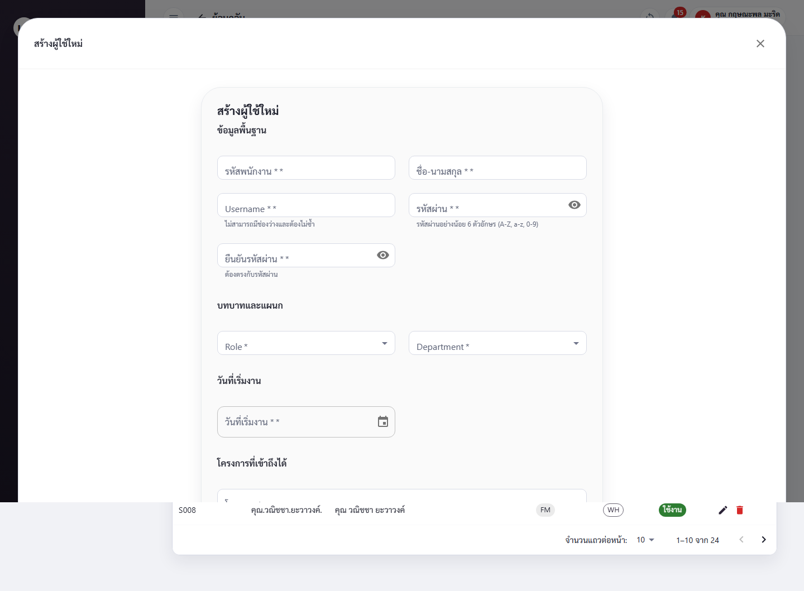
1.3 แก้ไขสมาชิก
- ที่แถวของสมาชิก กดไอคอน แก้ไข (✏️)
- เปลี่ยน บทบาท, โครงการที่รับผิดชอบ หรือ สถานะใช้งาน ได้
- กด "บันทึก"
1.4 ลบสมาชิก
- ที่แถวของสมาชิก กดไอคอน ลบ (🗑️)
- ระบบถามยืนยัน — กด "ยืนยัน" เพื่อลบ
1.5 นำเข้าสมาชิกจาก Excel/CSV
- กดปุ่ม "Import"
- เลือกไฟล์ Excel หรือ CSV
- ระบบแสดงตัวอย่างข้อมูลก่อนนำเข้า — ตรวจสอบความถูกต้อง
- กด "ยืนยันนำเข้า"
🪪 2 · จัดการแรงงานรายวัน (DC Management) ▾
หน้า /dc-management — ทะเบียนแรงงานรายวัน (Daily Contractor) พร้อมข้อมูลค่าจ้างและสวัสดิการ
2.1 ดูรายชื่อแรงงานรายวัน
- คลิกเมนู "จัดการ" › "แรงงานรายวัน" (หรือเข้าที่
/dc-management) - ค้นหาได้จากช่อง "ค้นหาชื่อ, รหัสพนักงาน..."
- กรองด้วย "กรองโครงการ", "กรองตำแหน่ง", "ปี" และ "รูปแบบการดู"
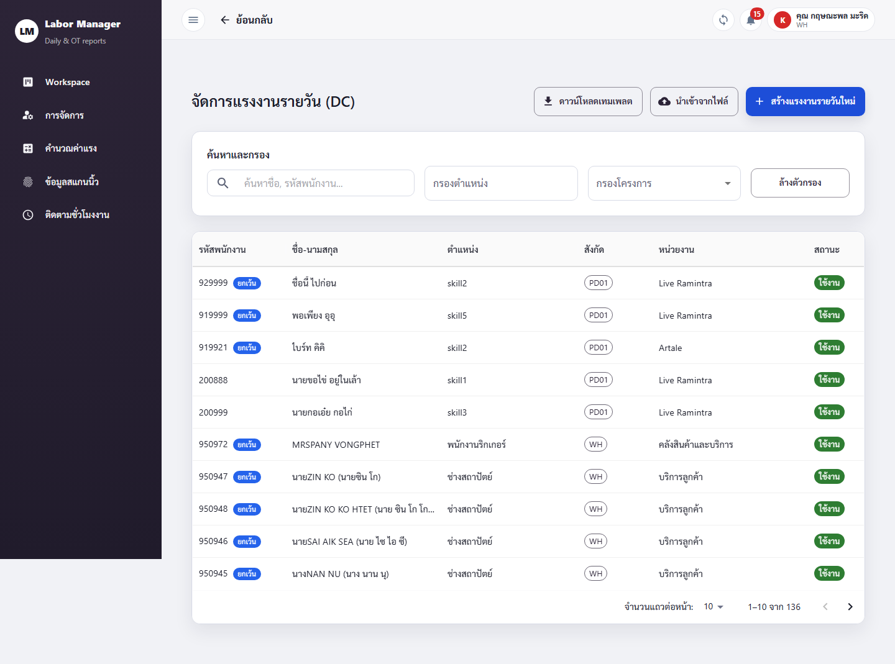
2.2 เพิ่มแรงงานใหม่
ฟอร์มแบ่งเป็น 3 แท็บ (DC Form Tabs):
- กดปุ่ม "เพิ่มแรงงาน"
- แท็บ "ข้อมูลส่วนตัว": กรอก ชื่อ-นามสกุล, รหัสพนักงาน, วันเกิด, วันที่เริ่มงาน, สถานะ ใช้งาน (Active)
- แท็บ "ข้อมูลการเงิน": กรอก ค่าแรงต่อวัน, เบี้ยเลี้ยง, ค่าวิชาชีพ, ค่าโทรศัพท์, ค่าห้องพัก, สวัสดิการอื่น (ค่าตู้เย็น/ทีวี/เครื่องซักผ้า/แอร์เคลื่อนที่/อื่นๆ) และ หักค่าผู้ติดตาม (Auto) พร้อม จำนวนคนผู้ติดตาม
- แท็บ "งวดงาน": ระบุงวดงานที่เกี่ยวข้อง
- กด "บันทึก"
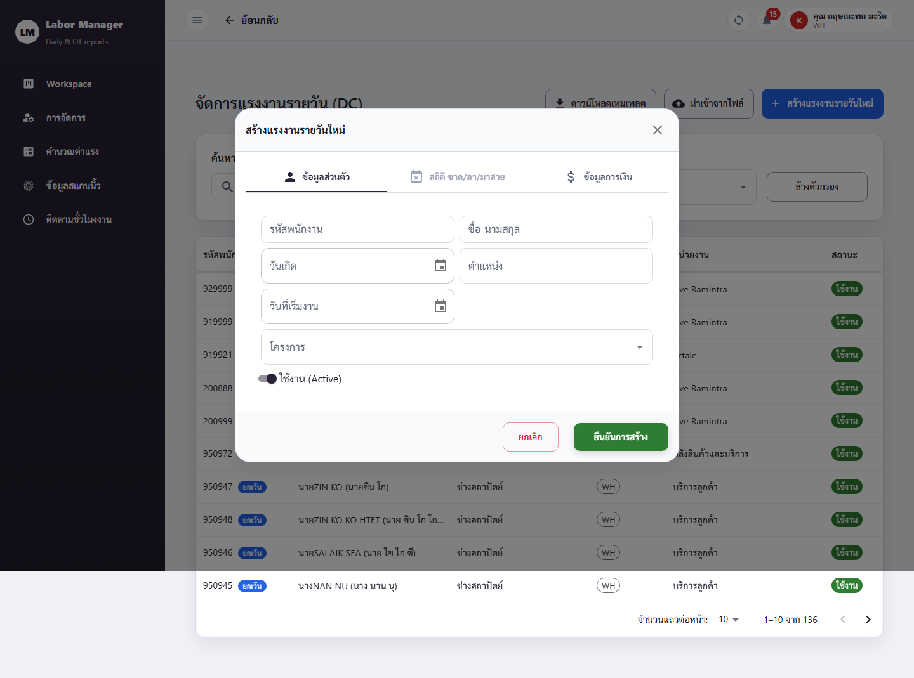
2.3 แก้ไข / ลบ / ดูรายบุคคล
- กดที่แถวแรงงานเพื่อ ดูรายละเอียดรายบุคคล
- กดไอคอน แก้ไข เพื่อปรับข้อมูล แล้วกด "บันทึก"
- กดไอคอน ลบ แล้ว "ยืนยัน"
2.4 นำเข้าแรงงานจาก CSV/Excel
- กดปุ่ม "Import" → ช่อง "เลือกไฟล์ CSV หรือ Excel"
- หากยังไม่มีแม่แบบ กด "ดาวน์โหลดเทมเพลต" ก่อน แล้วกรอกข้อมูลตามรูปแบบ
- อัปโหลดไฟล์ → ตรวจสอบตัวอย่าง → กด "ยืนยันนำเข้า"
💰 3 · คำนวณค่าแรง (Wage Calculation) ▾
หน้า /wage-calculation — คำนวณ ตรวจสอบ อนุมัติ และส่งออกข้อมูลค่าแรงของแต่ละโครงการ
3.1 เลือกโครงการ
- คลิกเมนู "คำนวณค่าแรง"
- ระบบแสดง รายการโครงการ ที่มีข้อมูลค่าแรง — คลิกโครงการที่ต้องการ
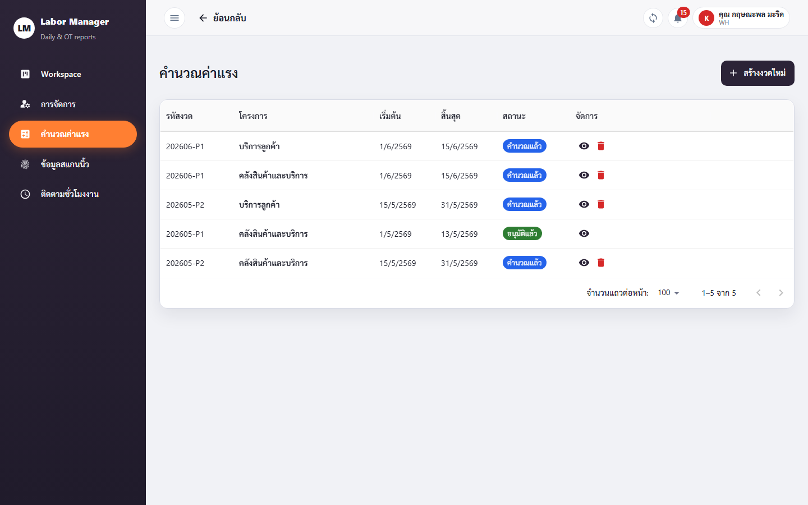
3.2 คำนวณและอนุมัติค่าแรง
- เลือกช่วง "วันที่เริ่มต้น" และ "วันที่สิ้นสุด"
- กดปุ่ม "คำนวณ" (Calculate) — ระบบแสดงตารางพนักงานพร้อมยอดค่าแรง
- ตรวจสอบยอด หากถูกต้องกด "อนุมัติ" (Approve) — ใส่ หมายเหตุ ได้หากต้องการ แล้วยืนยัน
3.3 ดูรายละเอียดรายบุคคล
- คลิกที่ชื่อพนักงานในตาราง → เปิดหน้ารายละเอียด (
/wage-calculation/[id]) - ดูการแยกยอด ค่าแรง/เบี้ยเลี้ยง/หักประกันสังคม รายวัน
- กด "ย้อนกลับ" เพื่อกลับสู่ตารางรวม

3.4 Export รายงานค่าแรง
- กดปุ่ม "Export Attendance" — ระบบดาวน์โหลดไฟล์ Excel สรุปการลงเวลา/ค่าแรง
🖐️ 4 · ข้อมูลสแกนเข้า-ออก (Scan Data Monitoring) ▾
หน้า /scan-data-monitoring — นำเข้าและตรวจสอบข้อมูลสแกนนิ้ว/บัตรของพนักงาน
4.1 ดูรายการสแกน + กรอง
- คลิกเมนู "ข้อมูลสแกน"
- กรองด้วย "จากวันที่" – "ถึงวันที่" และ "เลือกโครงการ"
- กด Refresh เพื่อโหลดล่าสุด · กด เต็มจอ (Fullscreen) เพื่อดูตารางขนาดใหญ่
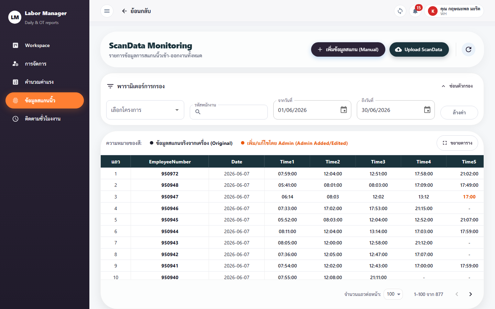
4.2 อัปโหลดไฟล์สแกนจากเครื่อง
- กดปุ่ม "Upload"
- เลือกไฟล์ข้อมูลที่ส่งออกจากเครื่องสแกนนิ้ว
- ระบบประมวลผลและเพิ่มข้อมูลเข้าตาราง
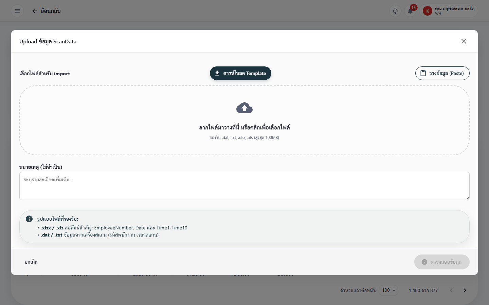
4.3 แก้ไข / เพิ่มรายการด้วยตนเอง
- กดที่รายการเพื่อเปิด กล่องแก้ไข (Edit Dialog)
- กรอก/แก้ รหัสพนักงาน, วันที่, เวลา, หมายเหตุ (ถ้ามี)
- กด "บันทึก" (Save) · กด "ยกเลิก" เพื่อปิดโดยไม่บันทึก
- คลิกชื่อพนักงานเพื่อดูรายละเอียดรายบุคคล (
/scan-data-monitoring/[id])
⏱️ 5 · สรุปชั่วโมงทำงาน (Work Hour Monitoring) ▾
หน้า /work-hour-monitoring — ดูภาพรวมชั่วโมงทำงานของพนักงานทุกโครงการ
- คลิกเมนู "ชั่วโมงงาน" — ระบบแสดงภาพรวมชั่วโมงทำงานรวม
- กดปุ่ม "Filter" เพื่อเลือกช่วงวันที่ ("เริ่ม" – "สิ้นสุด") และโครงการ → กด ใช้ตัวกรอง
- กด "รีเซ็ตตัวกรอง" เพื่อล้างเงื่อนไข · คลิกที่พนักงานเพื่อดูชั่วโมงรายบุคคล
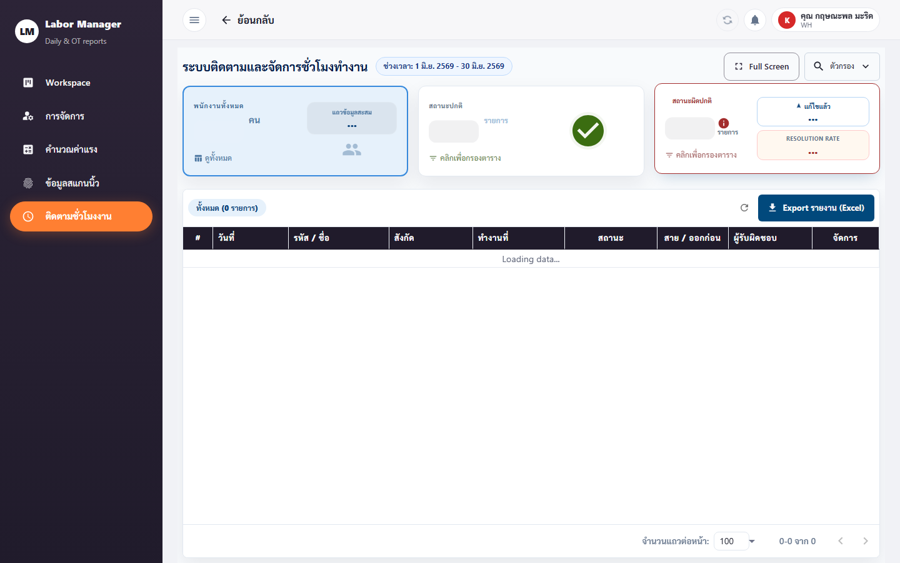
🛡️ 6 · กฎประกันสังคม (SSO Rules) ▾
หน้า /management/social-security-rules — กำหนดเพดานและอัตราการหักประกันสังคมที่ใช้คำนวณค่าแรง
- คลิกเมนู "จัดการ" › "กฎประกันสังคม"
- ดูกฎปัจจุบัน (เพดานเงินเดือน + อัตรา %)
- กด "เพิ่มกฎ" → กรอกเพดานและอัตรา ในกล่อง Social Security Rule → "บันทึก"
- แก้ไข/ลบกฎเดิมได้จากไอคอนในแต่ละแถว
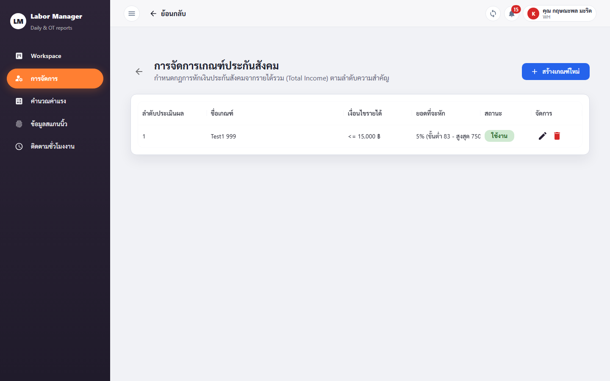
📅 7 · วันหยุดบริษัท (Company Holidays) ▾
หน้า /management/company-holidays — กำหนดวันหยุดที่ระบบใช้ประกอบการคำนวณค่าแรง/ชั่วโมงงาน
- คลิกเมนู "จัดการ" › "วันหยุดบริษัท"
- กรองตาม ปี เพื่อดูวันหยุดของปีนั้น
- กด "เพิ่มวันหยุด" → กรอก วันที่, ชื่อวันหยุด, เลือก ประเภท (นักขัตฤกษ์ / วันหยุดบริษัท) → "บันทึก"
- แก้ไข/ลบได้จากไอคอนในแต่ละแถว
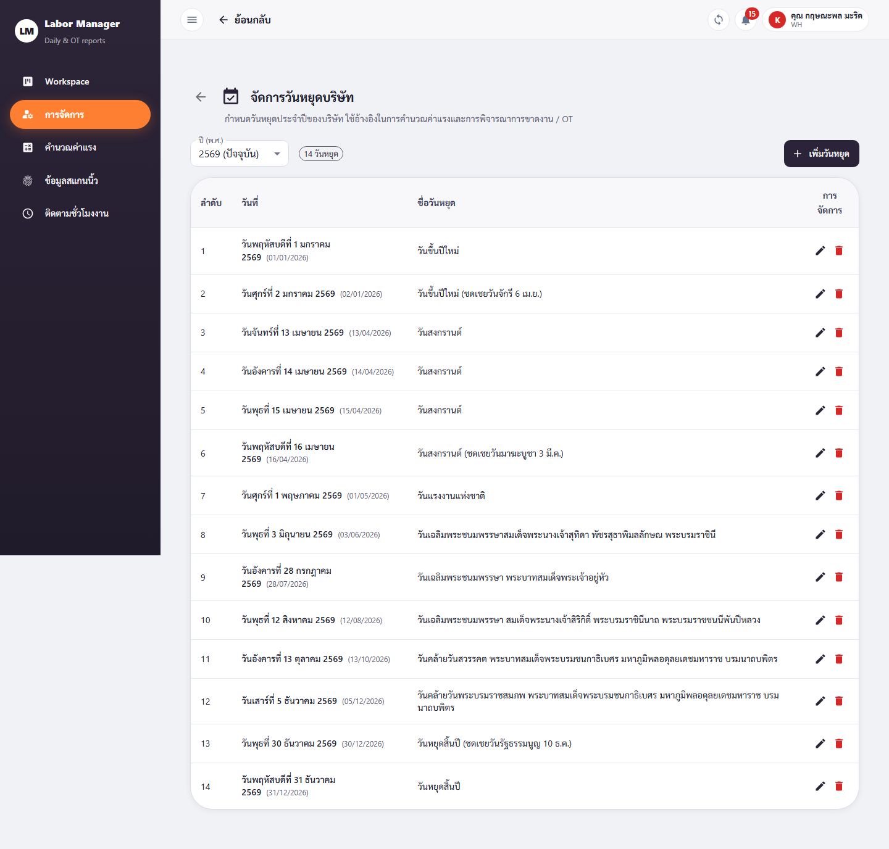
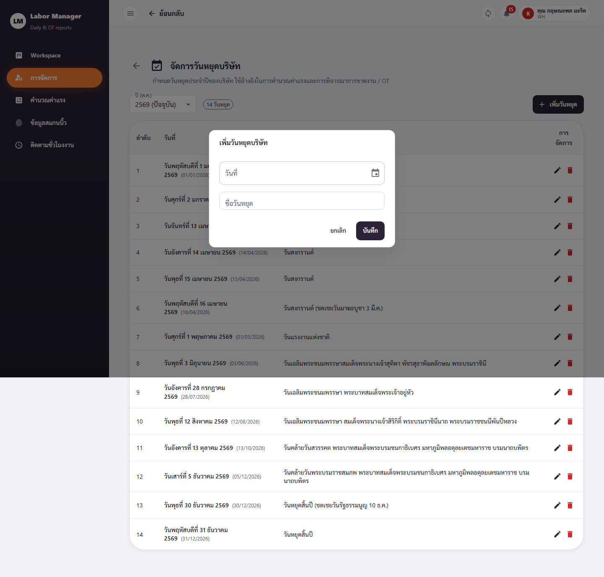